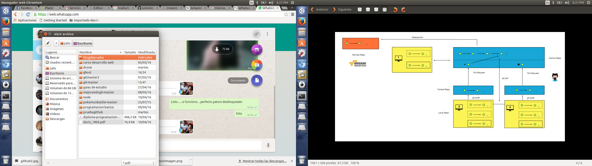
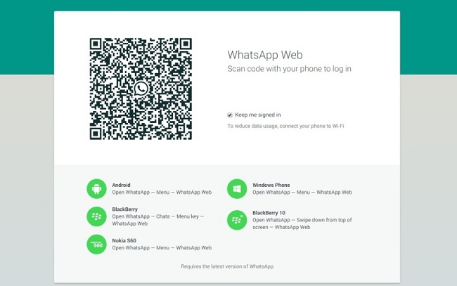

Whatsapp Web ya permite compartir documentos.
WhatsApp,la empresa subsidiaria de facebook, continúa actualizándose y su versión Web ya permite compartir archivos PDF , característica que se encontraba solo disponible para dispositivos móviles.

A través del botón para adjuntar archivos, el cual sólo soportaba vídeos e imágenes, ahora es posible enviar archivos PDF . Si bien la opción dice “documentos”, por el momento el único tipo de archivo que soporta la aplicación es en formato PDF.
Para acceder a a esta aplicación en nuestro computador debemos debemos ingresar a la pagina de whatsapp,luego debemos escanear el codigo QR con nuestro equipo entrando a menu/whatsappweb y listo.....

Links.
Para acceder a whatsapp web:
https://web.whatsapp.com/
Enlace al blog de whatsapp:
http://blog.whatsapp.com/